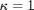
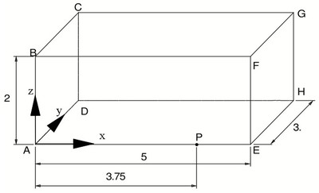
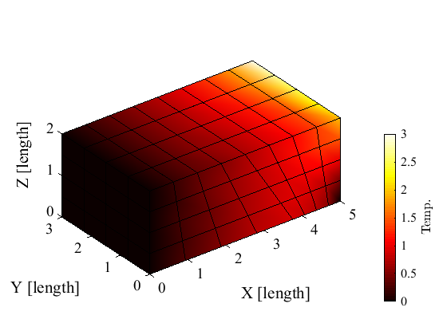

Heated brick. Model with hexahedra (H8) using a solver.
Contents
Link to the m-file.
Description
The brick represented in Figure 1 has insulated lateral surfaces (BCGF, CDHG, DAEH, ABFE). The surface ABCD is maintained at constant temperature T = 0 degrees, and the temperature is linearly distributed at EFGH surface so that T = 0 degrees at E point, T = 1 degrees at H and T = 2 degrees at point F. Find temperature at the point P. The reference solution for the temperature at point P is 0.901 degrees. Thermal conductivity .
|  |
| Figure 1. Definition of the geometry of the heated brick |
Analytical solution is due to the Reference M. Necati Ozisik “Boundary Value Problems of Heat Conduction”. Dover Publications, INC., N.Y. 1989.
Solution
It is good practice to put code into functions as we can avoid trouble due to shared global workspace variables. All variables in this function are private.
function pub_heated_brick_alt
Definition of the geometry: The locations of the points.
A=[0,0,0]; B=[0,0,2]; C=[0,3,2]; D=[0,3,0];
E=[5,0,0]; F=[5,0,2]; G=[5,3,2]; H=[5,3,0];
P=[3.75,0,0];
Define the material properties.
kappa= 1.0;
Generate the mesh by meshing two general hexahedra and merging them into a single mesh.
[fens,fes] = H8_hexahedron([A;P;(D+H)/2;D;B;(B+F)/2;(C+G)/2;C],1,1,1,[]);
[fens1,fes1] = H8_hexahedron([P;E;H;(D+H)/2;(B+F)/2;F;G;(C+G)/2],1,1,1,[]);
[fens,fes1,fes2] = merge_meshes(fens1, fes1, fens, fes, 1/1000);
fes=cat(fes1,fes2);
Next, the two-element mesh is refined by trisection. Applying trisection twice means the mesh is going to consist of 64 hexahedra.
[fens,fes]=H8_refine(fens,fes);
[fens,fes]=H8_refine(fens,fes);
In this tutorial we are going to invoke a steady-state heat conduction solver. To inspect To see all the nitty-gritty, refer to the tutorial pub_heated_brick.html.
The model is described in a struct with fields that define the region, the boundary conditions, the control parameters, ..., and all of this is passed along to the solver.
First we bundle up the node set.
clear model_data
model_data.fens =fens;
Then we define the region in which the problem is being solved by supplying material properties and the finite elements that cover the region. We must also specify the integration rule for the evaluation of the weighted-residual integrals (i. e. the conductivity matrix and the heat load vector).
clear region region.conductivity =kappa; region.fes= fes; region.integration_rule = gauss_rule(struct( 'dim',3,'order',2)); model_data.region{1} =region;
The essential boundary conditions are specified next.
Essential boundary condition: zero temperature on face ABCD. The nodes located on this face are selected using a 'box' criterion.
clear essential essential.temperature=0; essential.node_list = fenode_select(fens,struct('box',[A(1),A(1),-inf,inf,-inf,inf],... 'inflate', 1/1000)); model_data.boundary_conditions.essential{1} = essential;
Essential boundary condition: linearly-varying temperature on face EFGH. The nodes are selected using a box. The locations of the selected nodes are fens.xyz(nl,:), so that 1.0*fens.xyz(nl,2)/H(2) describes the gradient of the temperature in the Y-direction and the temperatures at the nodes may be therefore evaluated as shown below.
clear essential nl=fenode_select(fens,struct('box',[E(1),E(1),-inf,inf,-inf,inf],... 'inflate', 1/1000)); essential.temperature=1.0*fens.xyz(nl,2)/H(2)+2.0*fens.xyz(nl,3)/F(3); essential.node_list = nl; model_data.boundary_conditions.essential{2} = essential;
We have specified completely the model data. Solve for the temperatures using the steady-state solver. It does exactly what the tutorial pub_heated_brick.html did step-by-step.
model_data =heat_diffusion_steady_state(model_data);
Graphical rendering of the computed temperatures. First we show the temperature displayed with filled surfaces on the boundary of the mesh color-coded with the temperature.
model_data.postprocessing.colormap= hot;
mmodel_data=heat_diffusion_plot_temperature(model_data);
 We are going to present the temperatures using isosurfaces. These are surfaces of constant temperature, which are going to be color-coded using a map from temperatures to colors.
model_data.postprocessing.isovalues= [0.5:0.25:3.0];
model_data.postprocessing.colormap= hot;
model_data=heat_diffusion_plot_isosurfaces(model_data);

Discussion
Temperature at point P: Find the node at that point using a bounding box,...
Pid=fenode_select(fens,struct('box',bounding_box(P),... 'inflate', 1/1000)) ;
... and retrieve the temperature:
model_data.temp.values(Pid)
ans = 9.2337e-01
This may be compared with the analytical solution of 0.901 degrees at point P. With the given mesh we are therefore within 2.5% of the analytical solution.
end